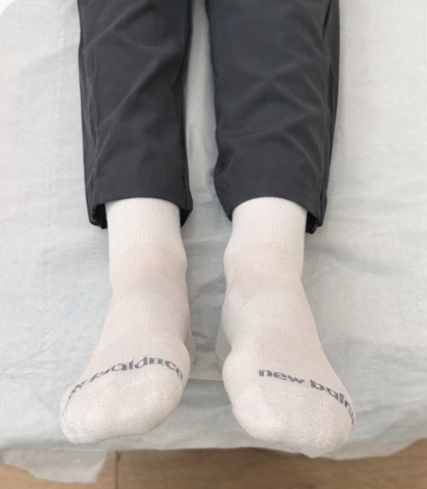
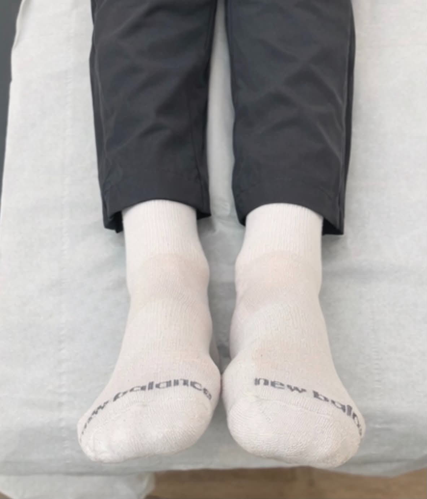

Back and neck pain
Reduce the pain, improve movement, and stop it coming back.
MJ Therapies Osteopathy
Treatment tailored to you
Reduce the pain, improve movement, and stop it coming back.
Assessment, treatment and rehab so you can get back to what you do.
Ease them coming back, and work on the posture behind them.
Find what is driving the pattern, then change it.
Support through pregnancy, recovery, and after.
Everyday life, work and training.

More about me
I graduated with a Bachelor of Osteopathy from Anglia Ruskin University and have been practising sports massage for over 5 years. With a background in sports, I’ve developed a deep appreciation for movement and the human body, which naturally led me to pursue osteopathy. I’m passionate about helping people of all ages and walks of life to achieve better health, mobility and pain management. I look forward to supporting each individual on their journey.

How I work
Hands-on care
Every session is built around you. A proper case history, a movement assessment, hands-on treatment, then clear aftercare. Osteopathy looks at how the whole body works together, not only the part that hurts.
What is going on, and what you want back.
How you move, and what is driving it.
Hands-on work for the session in front of us.
Clear next steps you can actually use.
In the room
Today’s session
A look at assessing and correcting a small leg-length imbalance. The work is about restoring balance and comfort, not chasing one sore spot.
Drag the handle to compare before and after.


Reviews
What people say
★★★★★
I could not be happier with the treatment I had today. I presented with extreme pain under my left shoulder blade and Morgan assessed me with a calm professionalism and a most engaging manner. She combined firm massage with targeted manipulation and in one session eased the raging pain significantly and addressed the underlying tension in my muscles. I came away feeling relaxed and confident in Morgan.
★★★★★
I was booked to see Morgan with a very uncomfortable mid back and lower back. After assessing me, the first session she worked wonders on my mid back region. She then tackled my lower back, same story and success. Now she’s addressing my hip movement. I cannot thank her enough. I’m moving freely again.
★★★★★
I’ve been twice to Moreno. Both times I’ve received a very warm welcome followed by an excellent consultation and treatment with Morgan for tingling and numbness in my arm.
★★★★★
Morgan was my physiotherapist today. She was nice, knowledgeable and took time to understand my case and treated me well. I strongly recommend her.
★★★★★
My son (13) has seen Morgan for shoulder issues due to playing cricket. In two sessions so far she has managed to relieve the shoulder pain and has been able to see that his pain is coming from postural issues. After working on him I could see an instant improvement with how he stands.
★★★★★
I had a hurt back and she looked at me, saw where I am tight in certain areas which might have been causing the pain, and adjusted me right. Really helped with my back getting better.
★★★★★
Great help from Morgan the last few sessions. It really improved the movement and pain relief on my damaged ligament. I highly recommend her and will definitely be heading back for more strength sessions.
★★★★★
I went to Morgan as an athlete experiencing extreme shoulder pain, and she was amazing at offering me relief from such a long-term injury. She is so passionate about her craft and anyone would be truly lucky to become one of her lifelong clients.